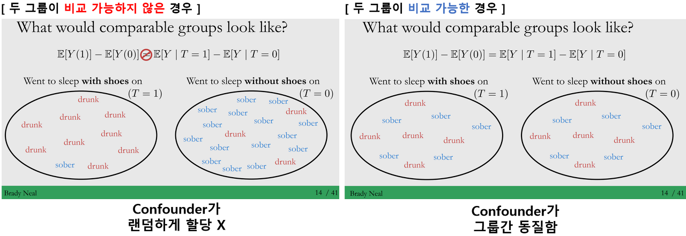
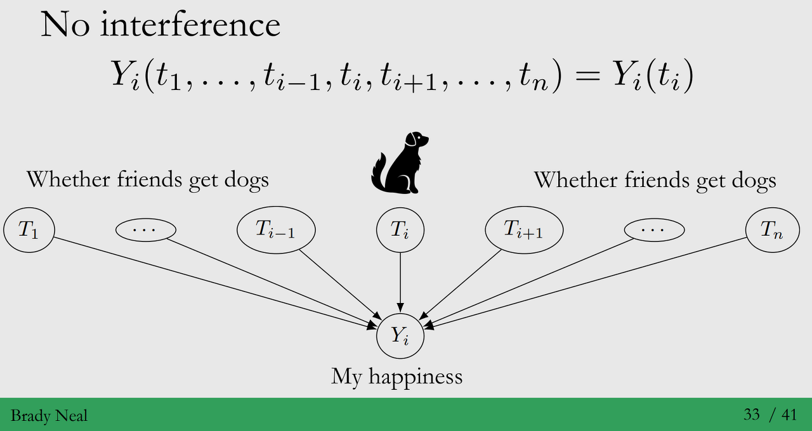

Contents
- Potential Outcomes이란 무엇인가요? (aka. Neyman-Rubin Causal model)
- 인과추론의 근본적인 문제
- 인과추론의 근본적인 문제를 이해하는데 필요한 가정
강의 영상 링크 : Chapter 2 - Potential Outcomes
작성된 내용 중 개선점이나 잘못된 부분이 있다면 댓글로 알려주세요!
(1) Potential Outcomes이란 무엇인가요?
◦ 정의 : 각각의 Treatment Options 하에서, 볼 수 있는 모든 Outcomes 입니다.
(같은 실험 대상에서 발생할 수 있는 모든 잠재적인 결과를 고려)
◦ Potential Outcomes와 Observed Outcomes는 무엇이 다른가요?
Observed Outcomes Y : 실험 대상에게 Treatment를 주었을 때, 발생한 결과
Potential Outcomes Y(t) : 대상에게 Treatment를 주었을 때, 발생할 수 있는 결과
→ Observed Outcomes Y ≠ Potential Outcomes Y(t)
모든 Potential Outcomes는 잠재적으로는 관측 가능하나, 모두 관측되는 것은 아니에요!
- Potential Outcomes에 대한 직관
◦ Intuition : 타임머신을 통해 시간을 되돌릴 수 있어서, 그 때 다른 action을 취했더라면 어떻게 되었을까요?
◦ Example : 타이레놀 복용과 두통
- Factual : 코로나 의심 증상으로 타이레놀을 먹었더니, 두통이 사라졌다
<\(do(T=1)\)> <\(Y_i(1) = 1\)>
- Counterfactual : 타이레놀을 안먹었더니, 두통이 사라지지 않았다
<\(do(T=0)\)> < \(Y_i(1) = 0\)>
→ Potential Outcomes : 두통이 사라진 경우 & 두통이 사라지지 않은 경우
→ Observed Outcomes : 두통이 사라진 경우
- 타임머신이 있어서 타이레놀 먹기 전으로 돌아갈 수 있어서, 타이레놀을 먹지 않은 경우를 관측할 수 있다면?
타이레놀은 나의 두통 해소에 Causal Effect를 측정할 수 있을 거에요!
하지만, 현실은 타임머신이 없……죠…….. (인과추론의 근본적인 문제에 해당됩니다)
◦ Causation은 처치 (Treatment) 이후, Potential Outcomes에 대한 차이로 정의될 수 있습니다.
처치에 대한 인과 효과 = (Treatment 받은 경우에 대한 Observed Outcomes) - (Treatment 받지 않은 경우에 대한 Potential Outcomes)
타이레놀에 대한 인과효과 = (타이레놀을 먹은 후, 두통 여부에 대한 관측 결과) - (타이레놀을 먹지 않고, 두통에 대한 잠재적 결과)

(2) Fundamental Problem of Causal Inference
- Potential Outcomes에서 본 것 처럼, 각 실험 대상에서 Potential Outcomes을 동시에 관찰하는 것은 불가능해요…!
- 즉, 우리에게 ’만약’이라는 데이터 (Counterfactuals)은 존재하지 않습니다.
1) Potential Outcomes에 대해 동시 관측이 불가능 (우린 타임머신 없어요)
- 동일한 실험 대상에 Treatment를 다르게 주고, 결과를 두 번 관측해도 될까요? No
→ 두 번째 결과는 첫 번째 관측 결과에 영향을 받을 수 있습니다.
2) Causal Effect 계산을 위해, Counterfactuals (Missing values)을 어떻게 해결하는지에 대한 부분이 중요합니다!
- 우리가 파악할 수 있는 부분 : Control Group (Treatment를 받지 않은 그룹)
- Causal Effect 추정을 위해 필요한 부분 : Counterfactuals (Treatment Group에서 Treatment가 없을 때 결과)
→ Control Group이 Counterfactuals과 최대한 가깝게 설계해야 합니다.

(후반부의 Ignorability/Unconfoundedness 가정을 확인해주세요!)
3) Selection Bias : 실험 대상을 랜덤하게 할당 하지 않는 이상, 시스템적으로 발생하는 문제입니다.
- Control Group과 Counterfactuals 간의 차이 = Selection Bias
- 예시 : 고객에게 노출된 배너 광고를 고객이 볼지 안볼지 선택하는 건 선택 편향 문제를 야기할 수 있어요.
→ 그룹 간 비교 가능하지 않은 상태라면, 광고로 인해 클릭을 (Causal Effect) 했다고 말할 수 없게됩니다.
- 참고로, 결과가 관측되기 전까지는 Counterfactuals인지 Factuals인지 구분할 수 없습니다. 그래서 관측 전까지 해당 부분은 Potential Oucomes 입니다!
💡 Causal Inference vs Machine Learning
- Causal Inference : Potential outcomes까지 고려
- Machine Learning : Potential Outcomes 고려가 필요하지 않고 Observed outcomes만 고려
(3) 근본적인 문제를 이해하는데 필요한 가정
- ITE 계산의 어려움 : (2)번의 인과 추론의 근본적인 문제(Missing values)에서 보았던 것 처럼,
개개인에 대한 효과 (ITE)에 대해서 Treatment 효과를 추정하기가 어려운 문제가 생겨요. - ATE 계산 :
- Q : 반면, ATE는 구할 수 있을까요?
A : Yes, 개인이 아닌 집단에 대한 평균 효과는 구할 수 있어요.
집단은 일반적으로 Control Group (대조군) vs Treatment Group (실험군)으로 나누어 측정합니다.
엄밀하게 말하면 Statistical Estimand를 구할 수 있습니다! (아래 그림에서는 1/3 이네요)

- Q : 그런데, 실제로 ATE가 계산이 가능한 걸까요?
A : No, 그 이유는 인과추론의 근본적인 문제인 Counterfactuals (Missing values) 때문이에요.
위의 그림에서는 Missing values (Selection Bias)를 무시하고 계산한 Statistical Estimand의 결과입니다.
하지만, 저희가 필요한 건 Causal Estimand입니다.

**"Association is not Causation"**→ Selection Bias를 해소하기 위해서는 Control/Treatment 그룹간에 비교가 가능해야 합니다!

- Potential Outcomes Framework의 Missing values 문제를 해결하기 위한 가정을 배워봅시다!
◦ Identification Assumption
→ ATE (Average Treatment Effect)가 Associational Difference와 같아지기 위한 가정
a. (Conditional) Exchangeability = Unconfoundness
b. Positivity = Overlap
c. No Interference
d. Consistency
- * SUTVA (Stable Unit-Treatment Value Assumption)
-
해당 가정은 No Interference와 Consistency를 결합한 부분이에요.
a1. Exchangeability (Ignorability)
- 정의 : \(Treatment \perp (Y(1), Y(0))\)
→ Treatment와 발생한 결과(Outcome)은 독립 (Treatment와 관계없이 발생하는 결과는 같습니다!
◦ \(E[Y(1)|T=0] = E[Y(1)|T=1] = E[Y(1)]\)
◦ \(E[Y(0)|T=0] = E[Y(0)|T=1] = E[Y(0)]\)
- 해당 가정을 크게 2가지 관점에서 바라볼 수 있습니다.
◦ Ignorability : 관측되지 않은 Missing values를 고려하지 않아요.
◦ Exchangeability : Treatment 그룹간은 서로 교환(비교) 가능합니다.
- 가정의 기대효과
◦ Confounder를(X, 과금수준) 랜덤하게 할당하는 효과를 얻을 수 있습니다 (Random Assignment)
= \(X\)가 \(T\)(프로모션, Treatment)에 할당되는 방식은 Coin Flip과 같아요
→ 그렇게 되면, Treatment를 제외한 나머지 요인들에 대해, 평균적으로 동질하게 만들어줍니다!
→ 순수하게 Treatment (프로모션)에 대한 Causal Effect (결제 효과)를 추정 가능하게 해줍니다.

- 문제점 : 다양한 Confounders가 존재하는 현실 상황에서, 두 그룹이 Exchangeable하다고
가정하는 것은 다소 비현실적 일 수 있습니다.
a2. Unconfoundedness (Conditional Exchangeability)
등장배경 : 위의 Exchangeability 가정의 문제점에서 말씀드렸던 것 처럼, Observational Study 환경에서는
현실적이지 않은 가정일 수 있습니다.정의 : \(Treatment|X \perp (Y(1), Y(0))\)

예시 :
◦ 상황 : \(X\)(과금 수준)으로 인해, \(T\)(프로모션)의 순수한 효과를 알기 어려운 상황입니다.
◦ 가정 : Subgroup (고과금, 중과금, 저과금)이 주어졌을 때, Subgroup간 비교가 가능
◦ 적용 : \(X\) (과금 수준)에 대한 Subgroup이 주어졌을 때, 프로모션 그룹은 교환 가능
→ 이로 인해, Y (결제)에 대한, Treatment (프로모션)의 효과를 파악할 수 있게 됩니다
- 계산 방법 : \(X\)에 대한 Marginalisation 부분만 추가되고, 나머지는 Exchangeability와 동일합니다!
Conditional Exchangeability 가정을 이용해서 ATE를 구할 수 있습니다.

- 문제점 : Unobserved Confounders(\(W\))
◦ RCT (Randomized Controlled Trials) 환경이 아니면, 가정이 위배될 수 있습니다.
◦ 또한 관측되지 않는 교란 변수가 많은 상황에서, Unconfoundedness는 테스트를 할 수 없는 가정이에요.
(그래서, 위 가정은 위배되기 쉽습니다ㅜㅜ)

b. Positivity (Common Support)
- 정의 : \(0 < P(T=1 |X=x) < 1\)
→ 공변량 \(X\)이 주어졌을 때, Treatment가 골고루 할당되어야 해요.
즉, Treatment를 받은 그룹과 받지 않은 그룹이 특성이 유사해야 합니다! - Positivity를 보는 다양한 관점
조건부 확률 계산 : 해당 Positivity 가정이 없다면, Causal Effect를 추정할 수 없게 됩니다.
아래 조건부 확률의 분모 부분이 \(P(T=1|X=x)\) 또는 \(P(T=0|X=x)\) 0이 되는 문제가 생깁니다…!

Overlap : 어떠한 Covariate \(X\)의 분포가 이상적일까요?
Treatment가 각각 주어졌을 때, Covariate에 대한 분포가 비슷해야 합니다!

Postivity와 Unconfoundedness Tradeoff
: Machine Learning에서의 차원의 저주 처럼, Condition하는 Covariate의 차원이 커지면 커질 수록 Overlap이 되는 부분이 점점 줄어들게 됩니다.
→ 즉, 더 많은 Covariates에 Condition을 줄 수록, Unconfoundedness 가정은 만족하기 쉬워지지만, 반대로 차원이 커지게 되어 Overlap (Positivity)가정은 만족하지 못할 확률이 높아집니다.

c. No Interference
- 정의 : \(Y\_i(t\_1,...,t\_{i-1},t\_i,t\_{i+1}...,t\_n) = Y\_i(t\_i)\)
→ 개개인의 Outcome은 다른 사람의 Treatment에 영향을 받지 않아야합니다. - 예시 :
◦ Treatment : 강아지 입양한 경우 - \(do(T=1)\) / 입양하지 않은 경우 - \(do(T=0)\)
◦ Outcome : \(Y\_i(1)\) - 행복함, \(Y\_i(0)\) - 행복하지 않음
◦ 실험 대상 개인의 Treatment에 대한 Outcome(행복)은 주변 대상으로부터 영향을 받지 않아야 해요.
- 문제점 :
◦ Node간 Connection이 있는 네트워크 데이터에서는 가정이 위배되기 쉽습니다.
(서로가 연결이 되어있기 때문이죠!)
◦ 다른 사람의 영향을 받지 않아야 하지만, 실제로는 받는 경우가 매우 많습니다. 아래 그림 처럼요…….

d. Consistency
- 정의 : \(T=t \\Rightarrow Y=Y(t)\)
→ 동일한 Treatment의 경우, 그에 따른 결과도 동일해야 합니다
“There are no multitple versions of Treatment”
- 예시 :
◦ Teatment : 강아지 입양한 경우 - \(do(T=1)\) / 입양하지 않은 경우 - \(do(T=0)\)
◦ Outcome : \(Y\_i(1)\) - 행복함, \(Y\_i(0)\) - 행복하지 않음
◦ Consistency 가정에 따르면, 강아지를 입양한 경우 \(do(T=1)\), 2개의 Outcome (\(Y\_i(1)\), \(Y\_i(0)\)) 중에서
하나의 결과에 대해서만 관측이 되어야 해요.
→ 아래와 같이 동일한 실험 대상에게 Treatment를 주었을 때, 다른 결과가 나온다면 가정에 위배가 된 것입니다.

- 문제점 : 당연해보이는 가정이지만, 실제 실험에서는 그렇지 않은 경우도 많습니다!
e. Trying it all together (Identifiability of the ATE)
- 위에서 배운 4가지 가정을 모두 종합해서, Causal Effect를 Identify 할 수 있어요.

To be continued) 앞으로 인과추론의 다른 Framework인 Strcutural Causal Models에 대해 배울 예정입니다.
Reference
◦ Lecture Notes : 2021 Summer Session on Causal Inference (박지용 교수님) [Link]
◦ Books : 데이터 분석의 힘 (이토 고이치로 저) [Link]